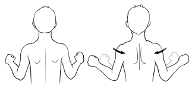
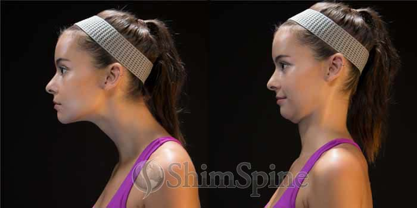
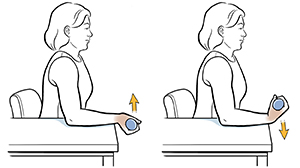
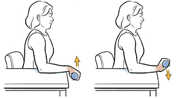

Stay Healthy at Your Computer
Scapula Retraction

Repetitions: 20 | Hold Time: 5 seconds
To perform: sit up tall, rest your arms at your side, squeeze your shoulder blades together. Hold this position for 5 seconds. Relax and repeat 20 times.
Chin Tucks

Repetitions: 10 | Hold Time: 10 seconds
to perform: sit up tall, rest your arms at your side, look straight ahead, pull your head back as if you're trying to align your ears with your shoulders.
Wrist Flexion & Wrist Extension Curls
Wrist Flexion
Repetitions: 30 | Hold Time: 0 seconds

To perform: sit up tall, have your elbows bent and arms resting at your side, turn your palms towards the ceiling, make a fist, bend your fists towards you.
Wrist Extension
Repetitions: 30 | Hold Time: 0 seconds

To perform: sit up tall, have your elbows bent and arms resting at your side, turn your palms down towards the floor, make a fist, bend your fists towards you.